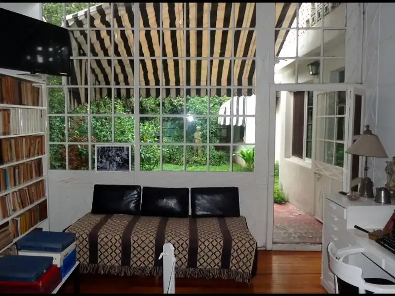
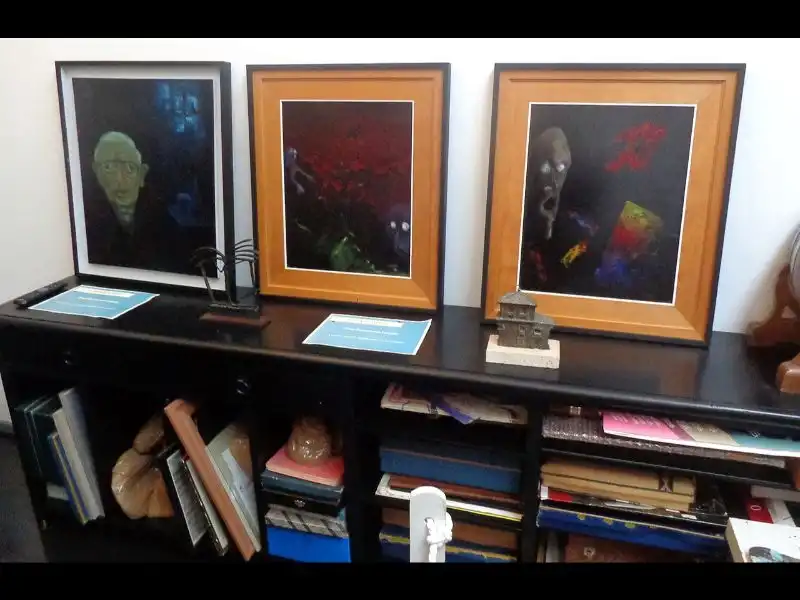
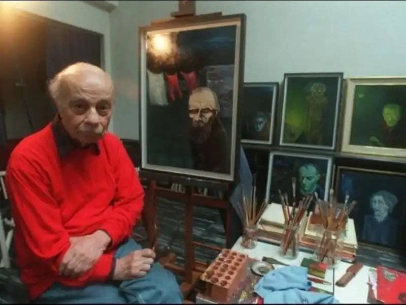

En su escritorio, su rincón de creación, yacen los anteojos que Sabato usaba para trabajar
El deseo de Ernesto.
La familia decide cumplir el deseo de abrir las puertas de la casona, como museo como el lo soñaba. Desde 2014 todos los sábados, Guido y Luciana Sabato, reciben a los visitantes de la mano de ellos.
El refugio de la pintura
En sus últimos años se dedicó a pintar, en oleo, pintura expresionista. Se destacan sus retratos a Nietzsche, Van Gogh, Sartre, Kafka, Dostoievski, entre otros
El jardín de Matilde

Rodeados de bibliotecas, los visitantes pueden apreciar la estatua de Ceres, que alguna vez estuviera en parque Lezama, y donde transcurren los encuentros entre Martín y Alejandra en "Sobre Héroes y Tumbas"
Traducciones de sus obras
Entre tantas obras traducidas, se destaca la traducción en Kurdo de "Sobre Héroes y Tumbas"
El Patio
Luego de cada recorrido, terminamos en este patio donde los visitantes se sientan y charlan con los nietos-guías, y les hacen preguntas
El mural de Sabato
Martín Ron, muralista de trayectoria internacional, pintó este mural impactante, que se encuentra justo enfrente de la casa Museo Sabato.
Casa Museo Sabato hecha realidad
Gracias a la ayuda del municipio de Tres de Febrero y de los amigos de la Casa de Ernesto Sabato, este sueño pudo ser realidad
Atelier construido por Sabato para Sabato
El único lugar de la casa que Ernesto construyó y modificó, ganandole terreno al gran patio, y construyendo este atelier, con entrada de luz en diagonal y orientación sur, como le indicaron sus amigos pintores: Soldi y Berni
Sus pinturas expresionistas

Se lo puede escuchar hablar sobre sus pinturas en los videos que acompañan la visita: Sí, son horribles, yo no las pondría en mi comedor. Era claro que el arte decorativo no era lo suyo sino más bien lo contrario.
Autoretrato expresionista

En su serie de retratos, también está su propia imagen, se destaca siempre la mirada de los protagonistas trazados en oleo.
El bosque de entrada
Una arboleda de once altos arboles, incluyen pinos, palmeras, una magnolia y una enorme araucaria. De afuera ya se puede sentir que la visita será especial
El reloj Cucú
Hasta sus últimos días, se escuchaba sonar la campana de este reloj.
Matilde Kusminsky, su fiel compañera
En las visitas nunca dejamos de contar cuando Ernesto tuvo que ir a la madrugada y escapar a caballo junto a ella, porque los padres judíos no estaban de acuerdo con su amor
Los eventos de la Casa
Complementando la mirada hacia atrás en el pasado, la casa abre sus puertas y en los patios y jardines, invita a artistas emergentes y consagrados, a mostrar su arte y su mirada del presente y futuro.